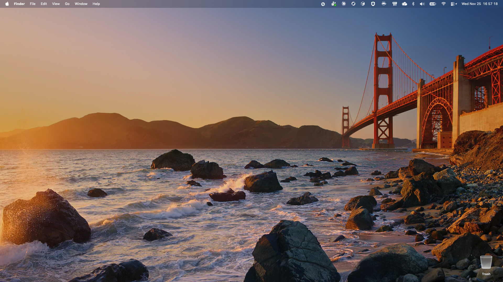
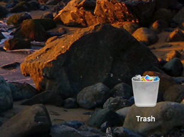
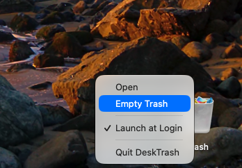

Drop to trash
Drag files or folders onto the icon. Finder does the work, so Put Back and external drives behave as usual.
Before Mac OS X, the Trash lived in the corner of your desktop. DeskTrash puts it back: a small native app that is useless, and therefore essential.

Drag files or folders onto the icon. Finder does the work, so Put Back and external drives behave as usual.
The icon is the system Trash icon, and it fills up and empties on its own as the Trash changes.

Open the Trash, empty it, or start DeskTrash at login. Drag the icon anywhere and it stays there.
